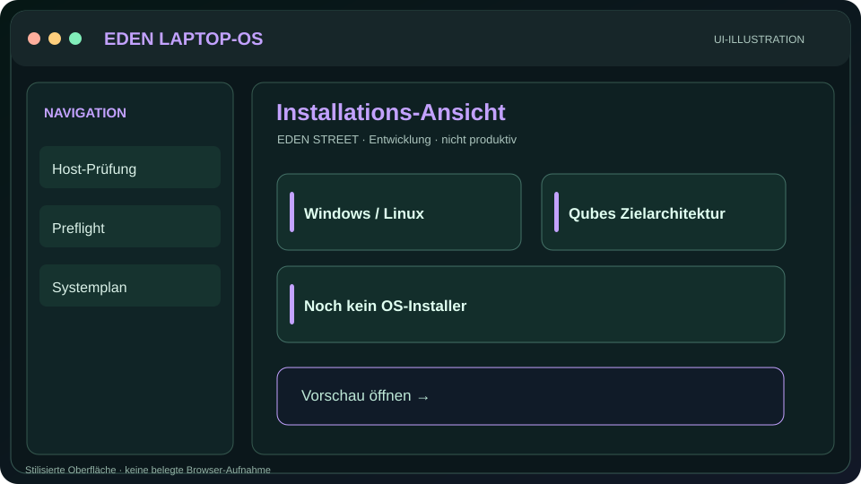
EDEN LAPTOP-OS
Geführte Einrichtung, Workbench, Read-only Preflight und langfristige Qubes-/Whonix-Integration.
Oberfläche ansehen →Repository →
EDEN Suite verbindet LAPTOP-OS, ROUTER, MOBILE, EDEN-Term, Wiki und Skills zu einer nachvollziehbaren Projektlandschaft. Bestehende Oberflächen ansehen, Dokumentation lesen und den geplanten Aufbau erkunden.
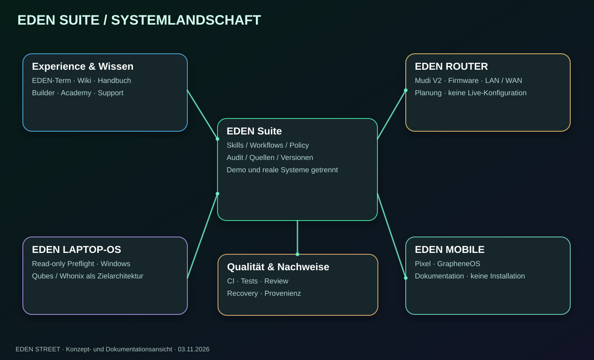
Jedes Projekt erhält einen eigenen Überblick und eine passende Vorschau. Router und Mobile bleiben zunächst dokumentierte Konzeptstände.

Geführte Einrichtung, Workbench, Read-only Preflight und langfristige Qubes-/Whonix-Integration.
Oberfläche ansehen →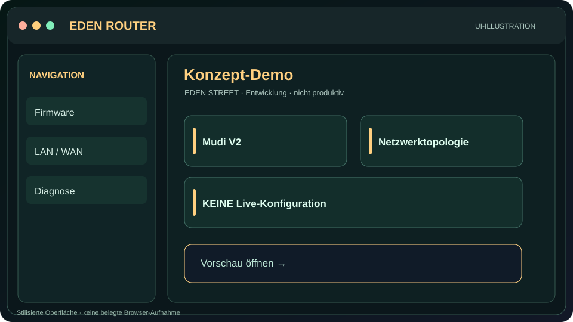
Mudi V2, Firmware-Matrix, Netzwerkplanung, Diagnose, Backup und Restore. Keine reale Konfiguration.
Konzept-Demo ansehen →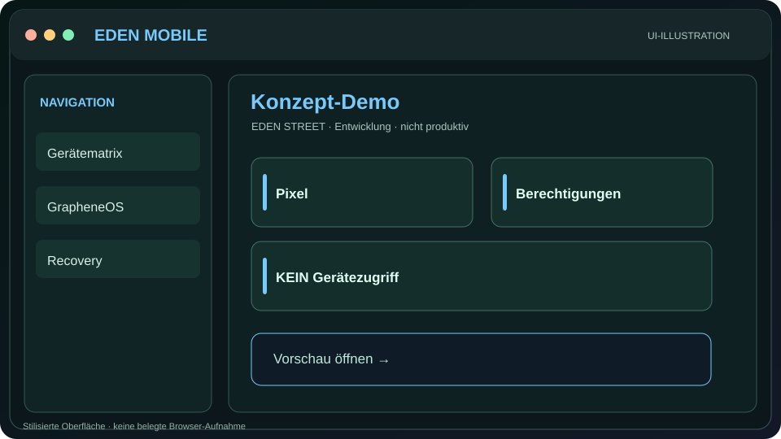
Pixel/GrapheneOS, Berechtigungen, Updates, Sicherung und Kompatibilität – ohne Gerätezugriff.
Konzept-Demo ansehen →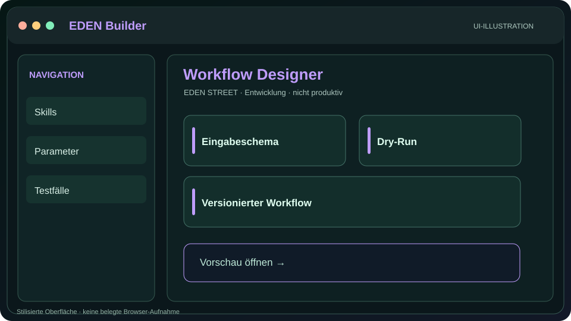
Skill-, Assistenten- und Workflow-Entwürfe konfigurieren und simulieren.
Builder ansehen →
Wissen, Quellen, Handbuch, Masterdokumentation und historische Dokumente.
Wiki-Demo ansehen →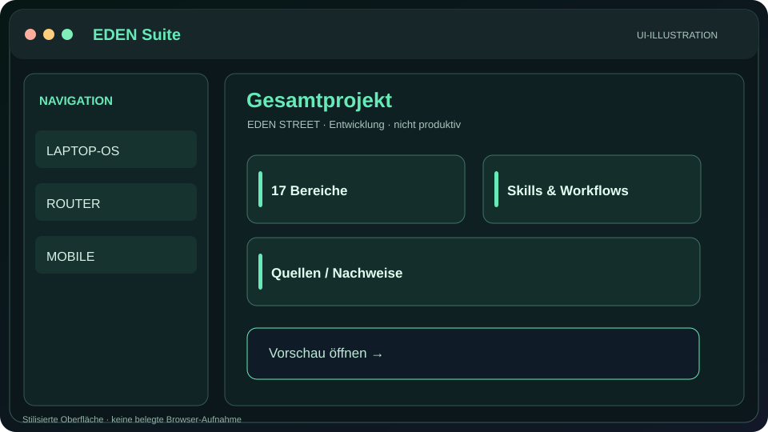
Systemarchitektur, Agentenrollen, reproduzierbare Workflows und Qualitätssicherung.
Projekt-Demo ansehen →Die 17 Bereiche sind als einzeln wiederverwendbare Entwicklungsaufträge mit Rollen, Bedienungsanweisungen, Tests und Rollbackkriterien dokumentiert.
Alle Bereiche sind dokumentiert und haben eigene Prozessgrafiken, einzeln nutzbare Prompts, Agentenrollen und eine interaktive Schrittfolge. Die Anzeigen sind Simulationen, keine durchgeführten Systemtests.
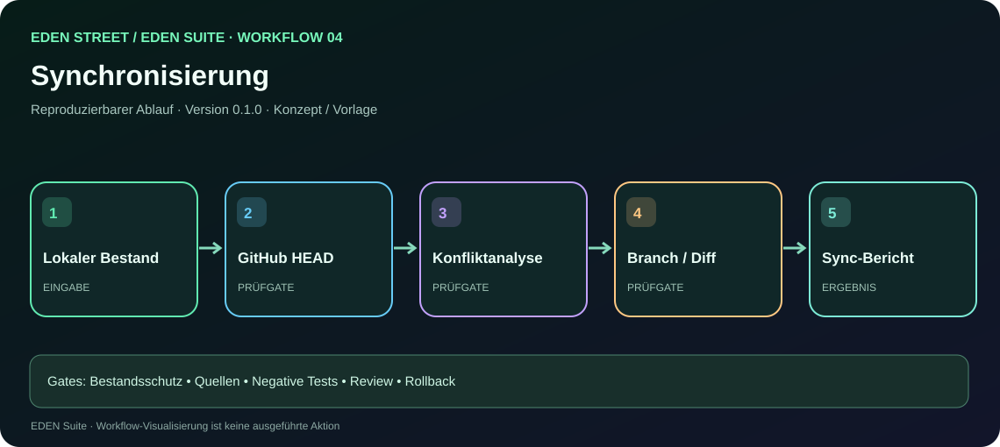
Lokale und entfernte Änderungen vergleichen, Konflikte bewerten und Sicherung nachweisen.
Workflow durchgehen →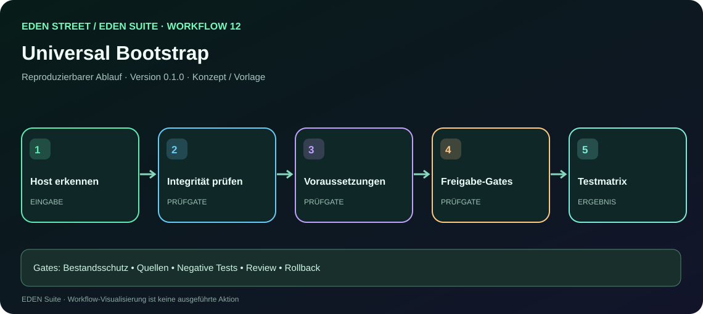
Plattform prüfen, Integrität sicherstellen, Voraussetzungen prüfen und Freigaben vorbereiten.
Workflow durchgehen →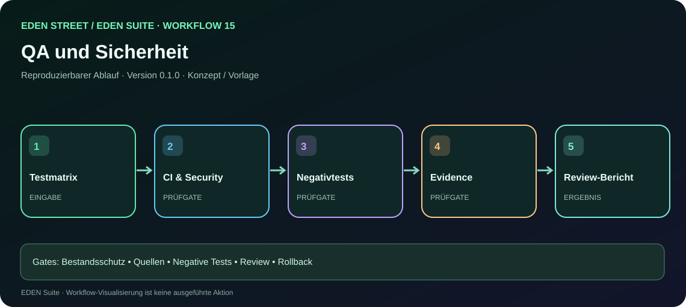
Tests, negativen Fälle, Evidenz, Review und dokumentierten Rollback verknüpfen.
Workflow durchgehen →Wissensportal, Herkunftsnachweise, Kapitel- und PDF-Register. Das historische Gesamthandbuch ist bis zur Prüfung des Originals noch nicht eingebettet.
Historische HTML-Seiten bleiben als eigene Ansichten vorhanden. Die neue Vorschau ergänzt sie durch einen einheitlichen Rahmen mit Modulwechsel.
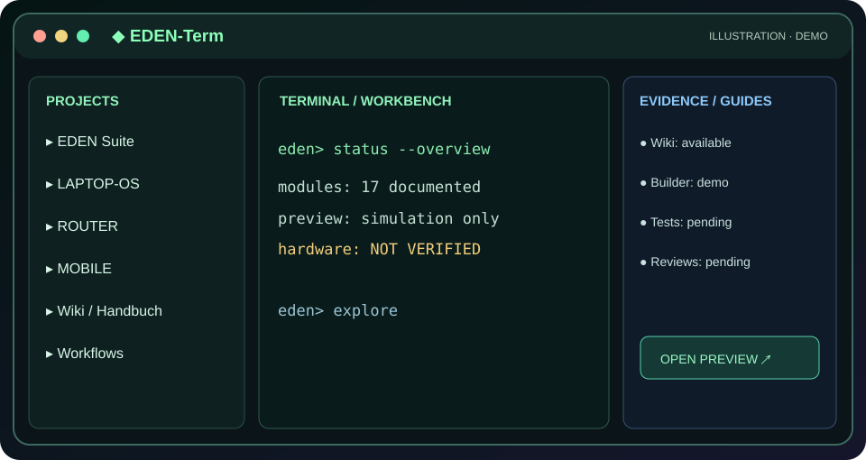
Workbench mit dreigeteiltem Aufbau.
Öffnen →Wissenshub und Dokumentationsoberfläche.
Wiki öffnen →Vorhandene Builder- und Kanban-Demonstrationen.
Builder öffnen →Planungsoberfläche mit simulierten Gerätestatus.
Router-Vorschau →Gerätekompatibilität und Berechtigungen als Demo.
Mobile-Vorschau →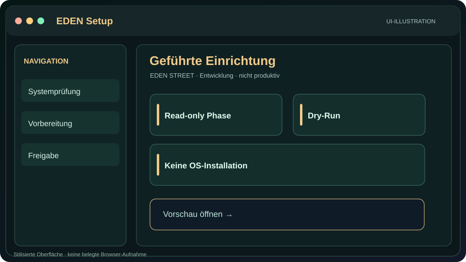
Vorhandene Installationsoberfläche, kein OS-Installer.
Setup-Vorschau →Skalierbare SVG-Ansichten: nach dem Inhalt benannt, mit Quellenbezug und alternativen Textbeschreibungen.
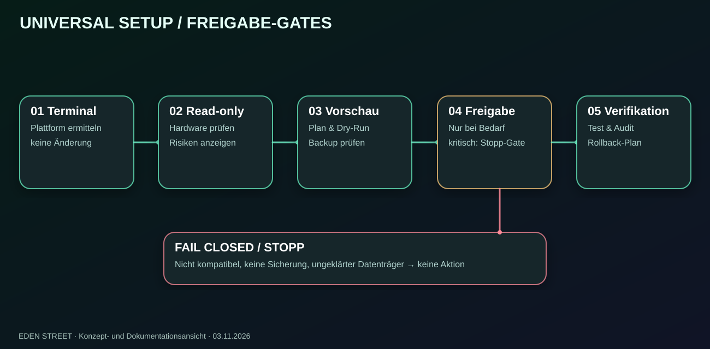
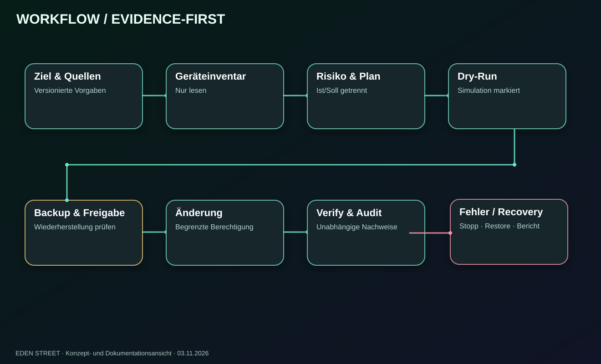
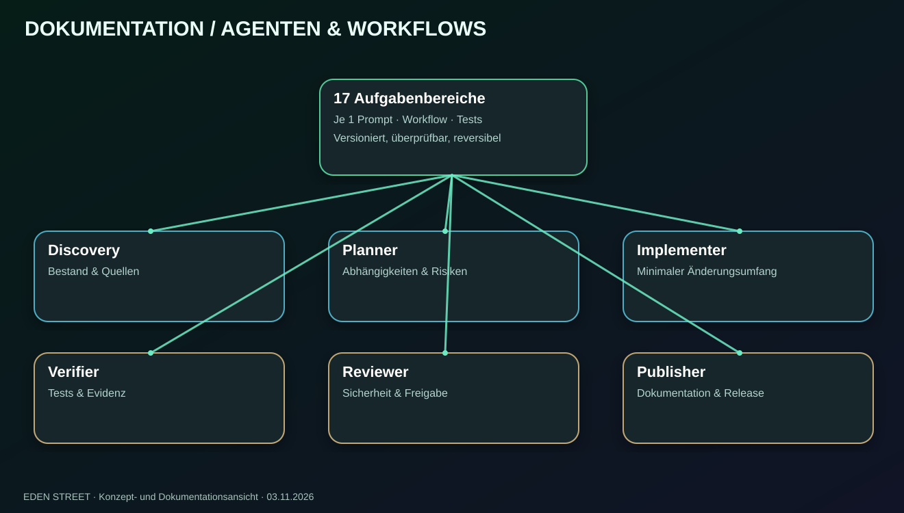